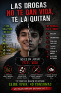
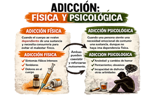
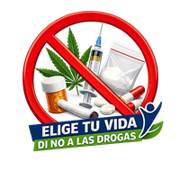

Se conoce como adicción a las drogas, o drogadicción, al consumo frecuente de estupefacientes, a pesar de saber las consecuencias negativas que producen. Entre otras cosas, modifican el funcionamiento del cerebro y su estructura, provocando conductas peligrosas.
Se considera adicción, porque es difícil intentar dejar de consumirlas, ya que provocan alteraciones cerebrales en los mecanismos reguladores de la toma de decisiones y del control inhibitorio y porque el usuario de las mismas dedica gran parte de su tiempo en la búsqueda y consumo de ellas.

Adicción física, ocurre en los sitios del cerebro donde las neuronas crean la necesidad del consumo compulsivo, debido a que el cuerpo se ha acostumbrado a la droga.Adicción psicológica, es la necesidad de consumo de una sustancia, que se manifiesta a nivel de pensamientos o emociones, ante una situación estresante, o algún problema. Por lo tanto no existe dependencia física, debido a que no se desarrollan receptores a nivel neuronal para la acción de la sustancia adictiva.

El IMSS participa en la prevención de las adicciones a través de estrategias educativas en sus unidades médicas, escuelas, guarderías y centros de trabajo.
1.-ChiquitIMSS, dirigida a niñas y niños de 3 a 6 años de edad, así como a sus padres o tutores y se desarrolla en Unidades de Medicina Familiar (UMF) y en guarderías de prestación directa e indirecta.
JuvenIMSS, está dirigido a adolescentes de 10 a 19 años de edad y se lleva a cabo en UMF y escuelas de responsabilidad institucional (nivel medio superior y superior)
Ella y Él con PREVENIMSS, desarrollada en UMF y Empresas con convenio, dirigida a mujeres y hombres de 20 a 59 años de edad.
Envejecimiento Activo PREVENIMSS, dirigida a adultos mayores de 60 y más años de edad, desarrollada en UMF y Empresas con convenio.